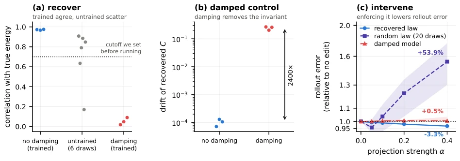
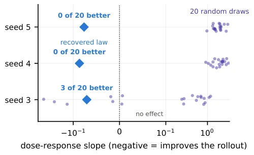
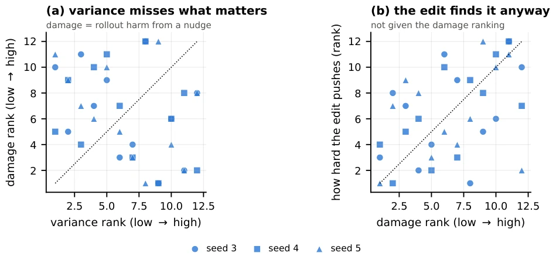
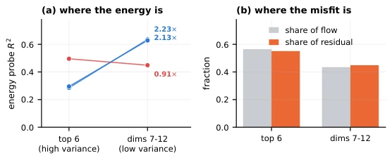
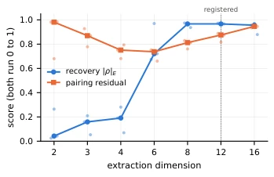

This paper pours cold water on those obsessed with the fantasy that "world models can automatically learn physical laws". The authors sharply point out that DreamerV3 can indeed "read" energy conservation from pixels, but this is merely because it learned to "see", not because it truly "understands" dynamics. Most ironically, when the model is "dreaming" (rollout), this conservation law it just learned collapses, leading to accumulated prediction errors. Although projection correction can improve prediction accuracy by 3%, this is more akin to inflating a leaking tire rather than fixing the engine. The experimental design is rigorous; using a damped system as a control group directly falsifies the sloppy logic of "correlation implies causation", yet the conclusion is limited to a single-degree-of-freedom pendulum, casting doubt on generalization capabilities for complex physical systems. This once again demonstrates that without explicit constraints, a neural network is merely a parrot that recites formulas, revealing its true nature as soon as it departs from the training data.
The core promise of World Models is to learn the dynamic laws of the environment to support long-horizon planning, yet existing evaluation metrics (such as video prediction error) are often deceptive. As pointed out by Alain and Bengio (2017) and Hewitt and Liang (2019), merely being able to decode physical variables (such as energy) from latent states does not imply that the model truly utilizes or retains the variable during state transitions. Models with random initialization often also exhibit high correlation through simple linear probes, making it difficult to distinguish whether the model has truly learned physical constraints or merely memorized the statistical features of the data. Furthermore, Belinkov (2022) also criticized the limitations of probe methods, where the accuracy of the probe confuses the content stored in the representation with the learning capability of the probe itself. This paper aims to address this "black box" problem: verifying whether trained world models truly maintain physical invariants in latent space, and whether the drift of such invariants is the fundamental cause of long-horizon prediction failure. By introducing a damped system as a negative control, the authors attempt to isolate genuine physical structure learning, rather than mere data fitting.
The study employs a rigorous "Extraction-Verification-Intervention" pipeline. First, on the data stream, videos without actions are generated using the Gymnasium Pendulum-v1 environment to train a frozen DreamerV3 world model, consisting only of an encoder, latent variables, and a decoder. Second, in the invariant extraction phase, the authors do not directly assume physical formulas; instead, they project latent states onto the first 12 principal component directions to construct a fourth-order polynomial basis containing 1819 terms. By minimizing the ratio of "variance within trajectory to total variance" (Rayleigh quotient), scalar candidates closest to conservation are screened. To further distinguish physical meaning from mathematical coincidence, a "Flow Alignment" criterion is introduced, forcing the gradient of candidate scalars to satisfy an antisymmetric relationship with the model's state transition vector field (similar to Hamiltonian mechanics structure), thereby ensuring that the scalar can mathematically generate the vector field. Finally, in the intervention phase, the authors designed a "Projection Correction" mechanism: during the autonomous imagination (rollout) process, at each step the latent state is projected back to the level surface of the initial scalar value along the gradient direction, thereby forcing the model to comply with the conservation law it "learned". To verify the validity of this invariant, the authors constructed three control groups: a model with random initialization, a model trained on a damped system (no conservation law), and a model with applied random polynomial constraints, thereby excluding overfitting and architectural bias.
Experiments were conducted on Gymnasium Pendulum-v1, comparing DreamerV3 models under conservative systems (no friction) and damped systems (with friction). The main findings are: the trained conservative model can stably extract invariants highly correlated with true energy (|ρ|>0.96), whereas the random initialization model can extract correlated quantities but exhibits large numerical fluctuations, and the damped model cannot extract conservation scalars at all. In intervention experiments, applying the extracted invariant correction to the conservative model reduced 50-step prediction error by 2.9%-3.5%, whereas applying random constraints typically resulted in error increases of 53.9%. Furthermore, analysis revealed that the correction operation primarily acts on directions of high sensitivity rather than high variance directions, demonstrating the physical validity of the correction. Ablation studies indicate that relying solely on the invariance criterion can recover most of the effect, while flow alignment mainly improves consistency across seeds. Limitations include that the experiment involves only single-degree-of-freedom systems, contact or multi-object interaction scenarios were not tested, and the improvement magnitude brought by correction is also relatively modest.

Figure 1: Each point represents one model. (a) The three trained conservative models recover energy correlations between 0.967 and 0.975, while six untrained models span 0.17–0.91. (b) The recovered scalar changes very little within observation-conditioned trajectories for conservative models and much more for damped models. (c) Rollout error as a function of projection strength α, relative to no edit. Enforcing the recovered constraint lowers error; enforcing a matched random polynomial constraint usually raises it; applying the recovered constraint to a damped model changes little.

Figure 2: Each row compares one model with its own null distribution. The 20 small marks are norm-matched random degree-4 constraints, using the same draws across models; the diamond is that model’s recovered constraint. Labels count the random constraints with a better dose-response slope than the recovered one.

Figure 3: Each point is one of the 12 extracted directions, ranked within its own model; the dotted line marks equal ranks. (a) Variance rank against damage rank at a 40-step horizon. (b) Damage rank against the magnitude of the invariant correction along that direction.

Figure 5: (a) Energy-probe R2 for the top six principal directions against directions 7–12, per model. (b) Fraction of latent flow and pairing residual carried by each group, medians over three models.

Figure 4: Energy recovery and pair- ing residual against extraction dimension. Lines are medians over the three models; points are individual models. Both quanti- ties are dimensionless.